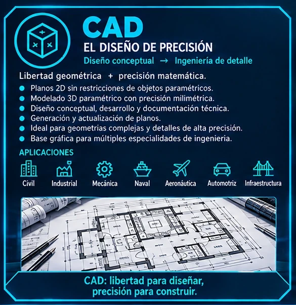
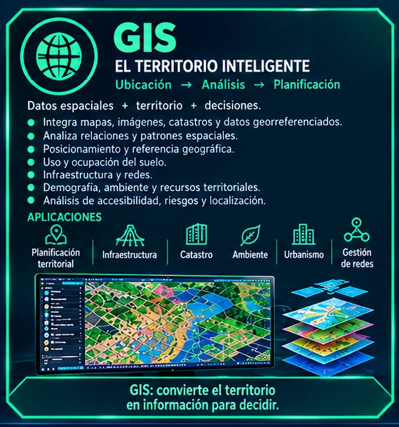
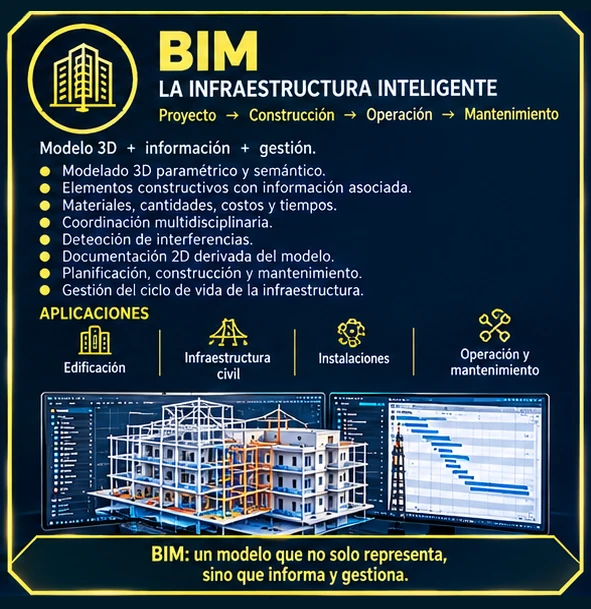
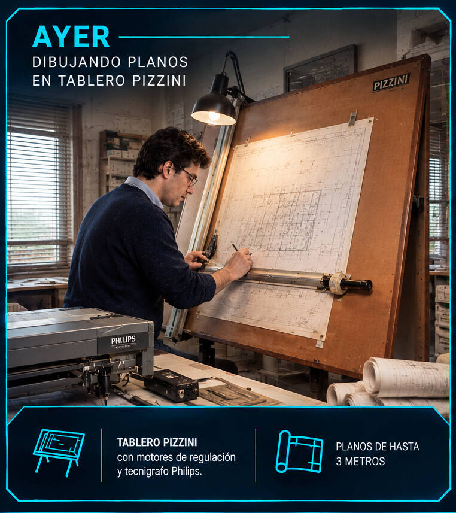
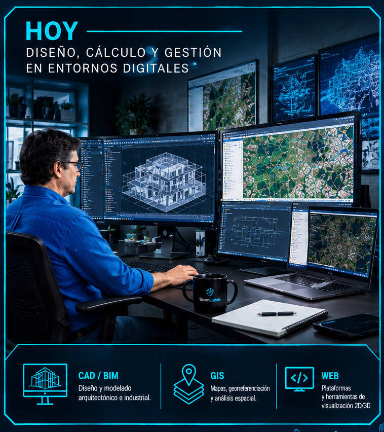
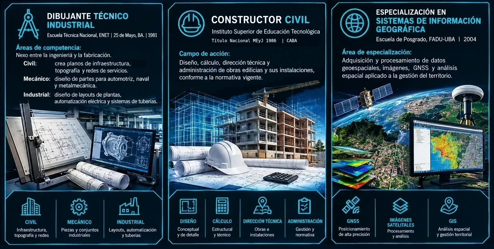
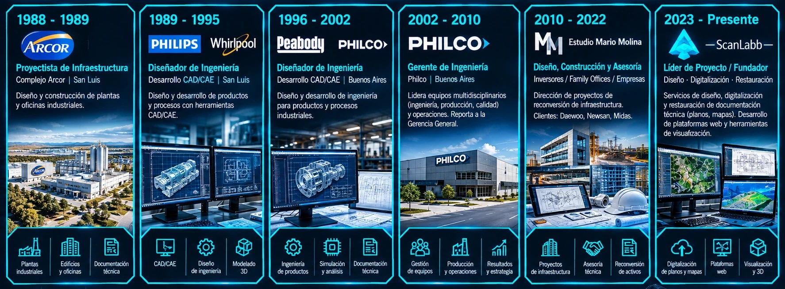
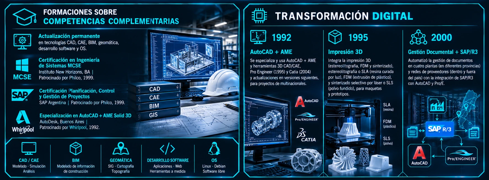

> mario_molina.exe — módulos [AEC] [CAD] [CAE] [BIM] [GIS] [WEB3D] ... OK
MARIO MOLINA_
Profesional especializado en Diseño y Gestión Digital (CAD, GIS, BIM, GeoInformática y Diseño Web).
Con más de 35 años de experiencia en proyectos de ingeniería para multinacionales como
Arcor, Philips, Whirlpool, Peabody y Philco.
Actualmente, dirige el Estudio ScanLabb,
dedicado a convertir documentación técnica e histórica en activos digitales.
Integración → CAD → GIS → BIM = Infraestructura inteligente_
Precisión geométrica → Contexto territorial → Gestión del ciclo de vida_



Transformo documentación técnica en activos digitales inteligentes_
Transformo planos analógicos, mapas y archivos históricos en herramientas dinámicas para la toma de decisiones.
- > Creación de planos: Desarrollo y actualización de documentación técnica precisa para proyectos de arquitectura, ingeniería, construcción, mecánica e industriales.
- > Vectorización y digitalización: Conversión de planos en papel, archivos escaneados o mapas antiguos a formatos digitales editables DXF o PDF.
- > Renderización de imágenes históricas o de proyectos actuales.
- > Plataformas de consulta a medida: Creación de aplicaciones web personalizadas para la búsqueda, filtrado y visualización de tu archivo documental o patrimonial.
- > Visores interactivos 2D y 3D: Implementación de herramientas en la nube para explorar mapas cartográficos, nubes de puntos o modelos 3D sin necesidad de software especializado.
- > Integración de datos: Conexión de tu base de datos con la representación gráfica (planos/mapas) para una gestión centralizada y eficiente.
- > Auditoría de archivos técnicos: Organización, indexación y preservación digital de activos patrimoniales o históricos.
- > Soluciones para Smart Cities y gestión de activos: Estructuración de datos geoespaciales y técnicos para el mantenimiento de infraestructuras y catastro.
- > Entidades públicas y archivos históricos que custodian patrimonio arquitectónico o cartográfico.
- > Empresas de infraestructura y construcción que necesitan centralizar su documentación técnica.
- > Gestores de activos e inmobiliarios que requieren visores interactivos para sus proyectos.
- > Precisión técnica: Garantizamos la máxima fidelidad en la conversión de tus datos físicos al entorno digital.
- > Accesibilidad total: Llevamos tus planos y mapas del escritorio a la web para que tu equipo acceda a ellos desde cualquier lugar.
- > Enfoque patrimonial: Entendemos el valor de la documentación histórica y aplicamos criterios rigurosos para su preservación digital.
> PERFIL PROFESIONAL
Enciclopedia técnica · Mario Molina
Mario Molina es un Diseñador, Constructor Civil y GeoInformático especializado en CAD, BIM y GIS, con más de tres décadas de experiencia en proyectos de ingeniería, construcción, diseño y desarrollo para empresas multinacionales líderes como —Arcor, Philips, Whirlpool, Peabody y Philco—, además de asesorar y dirigir proyectos de reconversión de activos industriales para —Daewoo, NewSan y Midas—. [1]
Su trayectoria representa la evolución de la documentación técnica:
Desde el trabajo manual en tableros de dibujo y tecnígrafos, utilizando planos de gran formato, hasta la
gestión digital de proyectos mediante la integración de tecnologías CAD, CAE, BIM, GIS, GeoInformática y
plataformas web de visualización 2D y 3D / gestión documental.
Su perfil combina competencias técnicas y de gestión en CAD, CAE, BIM, GIS, geomática, desarrollo web, documentación técnica y visualización digital, lo que le permite intervenir en distintas etapas del ciclo de vida de proyectos de edificación, infraestructura, desarrollo tecnológico y productos.


Trayectoria
Inició su trayectoria laboral como dibujante en los estudios del arquitecto Jorge Luis Vázquez,
en 25 de Mayo, provincia de Buenos Aires, entre 1980 y 1982, y del Estudio Iribarne y Asociados, en la Ciudad Autónoma de
Buenos Aires, entre 1982 y 1986.
Esta primera etapa le permitió incorporarse tempranamente al ámbito de la arquitectura, ingeniería y la documentación técnica, antes de completar sus estudios superiores en diseño y construcción civil.
Luego de finalizar su formación, desarrolló su carrera en distintos roles vinculados
con la ingeniería y el diseño, entre ellos:
• Proyectista (plantas industriales y logisticas).
• Diseñador (arquitectónico · mecánico · tecnológico).
• Gerente de ingeniería (civil e industrial).
• Director de proyectos de construcción (viviendas, naves industriales y logisticas).
• Asesor técnico para la reconversión de activos (plantas industriales y logisticas)
Profesional con especializaciones adquirida en entornos corporativos internacionales para el diseño y la gestión de proyectos constructivos, el desarrollo de productos y la asesoría en reconversión de activos industriales.
Actualmente dirige ScanLabb, un estudio dedicado al diseño, digitalización, restauración y gestión de documentación técnica, incluyendo planos, mapas y archivos de proyectos. También desarrolla plataformas web y herramientas para la visualización y consulta de información técnica en 2D y 3D.[2]
- [2004]Especialización en Sistemas de Información Geográfica — Escuela de Posgrado - UBA · FADU | CABA 2004.
- [1986]Constructor Civil — Instituto de educación Tecnológica BA | "Título Nacional MEyJ 1986" | CABA 1986.
- [1981]Dibujante Técnico Industrial — Escuela Técnica Nacional ENET | 25 de Mayo, PBA 1981.

Referencias_
[1] Registro de trayectoria 1988–presente — ver Trayectoria.
[2] Herramientas y plataformas — ver Transformación digital.
> EXPERIENCIA LABORAL
Línea de tiempo · 1988 — presente

 ARC
ARC
Proyectista de Infraestructura
ARCOR — Complejo San Luis
Diseño y construcción de plantas y oficinas industriales del complejo agroindustrial.
 PHS
PHS
 WHP
WHP
Diseñador CAD/CAE · Ingeniería de Desarrollo
PHILIPS · WHIRLPOOL — San Luis
Ingeniería de desarrollo de producto en línea blanca y electrónica de consumo.
 PBD
PBD
 PHC
PHC
Diseñador CAD/CAE · Ingeniería de Desarrollo
PEABODY · PHILCO — Buenos Aires
Desarrollo y documentación de producto; transición hacia la gestión de ingeniería.
PHC
Gerente de Ingeniería
PHILCO — Buenos Aires
Responsabilidad directa sobre equipos multidisciplinarios (ingeniería, producción, calidad) y operaciones, reportando a la Gerencia General.
 DW
DW
 NSW
NSW
 MDS
MDS
Director · Estudio de Diseño y Construcción
Estudio propio — Asesoría a inversores y family offices
Asesoría a inversores y family offices; dirección de la reconversión de infraestructuras para Daewoo, Newsan y Midas.
 SLB
SLB
Director / Fundador
ScanLabb — Digitalización y Rescate Patrimonial
Firma especializada en diseño, digitalización y restauración de planos, mapas y documentación técnica; plataformas web y herramientas de visualización 2D/3D para gestión documental.
> TRANSFORMACIÓN DIGITAL
Evolution log · 1992 — presente

AutoCAD + AME 3D — adopción temprana de herramientas 3D CAD/CAE en ingeniería de desarrollo.
Pro/ENGINEER + Impresión 3D — SLA (resina curada por luz), FDM (extrusión) y SLS (sinterizado láser) para maquetas y prototipos.
SAP/R3 + AutoCAD + Pro/E — gestión documental automatizada en 4 plantas (distintas provincias) y red de proveedores nacional e internacional.
Catia — modelado avanzado en proyectos de multinacionales.
Plataformas web 2D/3D — visores interactivos y control documental con herramientas propias (ScanLabb).
Stack Corporativo
Para clientes corporativos, según cada proyecto:
Stack Open Source · Debian
Para clientes privados: costos reducidos sin perder precisión:
> COMPATIBILIDAD DE FORMATOS: IFC · DWG · RVT · DXF · PDF — estaciones multisistemas (Debian / macOS / Windows)
> CAPACIDADES
Competencias verificadas en obra e industria
> SECTORES DE APLICACIÓN
Dónde aporta la experiencia
> CONTACTO
Canales directos - Ciudad de 25 de Mayo, Buenos Aires